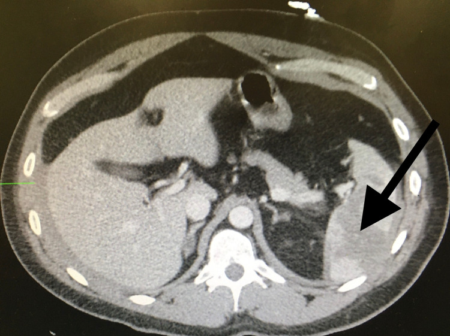

Ficha del catálogo
Traumatismo esplénico
- Sistema
- Digestivo
- Modalidad
- TC
- Región
- Bazo
- Dificultad
- Intermedio
El bazo es uno de los órganos sólidos que se lesiona con mayor frecuencia en el traumatismo abdominal cerrado. El espectro va desde la contusión y el hematoma subcapsular hasta la laceración profunda, la fractura del órgano y la lesión vascular con sangrado activo. El manejo actual es conservador en muchos pacientes estables, con apoyo de la angioembolización.
Técnica
La tomografía con medio de contraste intravenoso es el estudio de elección en el paciente hemodinámicamente estable. Se adquiere fase portal para valorar el parénquima y se añade fase arterial cuando se sospecha sangrado o lesión vascular, y una fase tardía para diferenciar la extravasación activa del pseudoaneurisma. El ultrasonido dirigido al trauma sirve para detectar líquido libre a pie de cama pero no descarta la lesión parenquimatosa.
Qué observar
- Laceraciones como líneas o bandas hipodensas que interrumpen el parénquima realzado
- Hematoma subcapsular que aplana y deforma el contorno del bazo, a diferencia del hemoperitoneo perisplénico
- Hemoperitoneo, con atención al coágulo de mayor densidad adyacente al órgano lesionado
- Extravasación activa de contraste, que aparece como un foco hiperdenso que crece y se dispersa en la fase tardía
- Pseudoaneurisma o fístula arteriovenosa, focos que siguen la densidad del vaso y se lavan en la fase tardía
- Devascularización parcial o total del órgano y lesiones asociadas del hilio y de las costillas inferiores izquierdas
Hallazgos
El bazo lesionado muestra defectos lineales o geográficos de baja densidad sobre un parénquima que realza, con hematomas intraparenquimatosos o subcapsulares. La distinción entre extravasación activa y pseudoaneurisma es determinante, porque la primera se difunde y aumenta en la fase tardía mientras que el segundo mantiene bordes definidos y se aclara junto con el árbol vascular. La ausencia de realce de un fragmento o de todo el órgano indica devascularización. Conviene revisar siempre el resto del abdomen y la base pulmonar izquierda, porque las lesiones asociadas son frecuentes.
Perlas
El bazo puede engañar en la fase arterial precoz porque su realce fisiológico es heterogéneo y en bandas, lo que simula laceraciones. Por eso el parénquima se juzga en la fase portal, cuando el realce ya es homogéneo. Otro punto clave es que la gravedad no depende solo del tamaño de la laceración, sino de la presencia de lesión vascular, que puede aparecer con laceraciones aparentemente modestas y que suele indicar angioembolización.
Diagnóstico diferencial
- Realce heterogéneo fisiológico en fase arterial
- El patrón en bandas se homogeneiza en la fase portal y no se acompaña de hemoperitoneo.
- Hendidura esplénica congénita
- Borde liso y regular, sin sangre adyacente y sin extenderse al interior del parénquima.
- Infarto esplénico
- Defecto de base periférica y vértice hacia el hilio, sin antecedente traumático y sin hemoperitoneo.
- Bazo accesorio o esplenosis
- Nódulos con el mismo realce que el bazo, sin sangrado y con antecedentes previos.
- Lesión de otro órgano con hemoperitoneo
- El coágulo de mayor densidad se localiza junto al órgano realmente lesionado.
Simuladores
- Artefacto de movimiento respiratorio que crea líneas en el parénquima
- Contraste retenido en el estómago o en el colon adyacente que simula extravasación
- Clip o material quirúrgico previo que produce artefacto hiperdenso
Por modalidad
- TC
- Es el método de referencia en el paciente estable, define el grado de lesión y detecta la lesión vascular que orienta la embolización
- US
- El estudio dirigido al trauma detecta líquido libre con rapidez pero no descarta lesión parenquimatosa ni vascular
- RM
- Tiene un papel muy limitado en el contexto agudo y se reserva para el seguimiento en casos seleccionados
Protocolo
Tomografía abdominopélvica con medio de contraste intravenoso, con fase portal a los 70 segundos como base, fase arterial cuando se sospecha lesión vascular y fase tardía a los 3 a 5 minutos para distinguir extravasación de pseudoaneurisma. Se emplean cortes finos y reconstrucciones coronales y sagitales, y no se administra contraste oral positivo en el traumatismo agudo.
Clasificación
La escala de lesión de órganos de la asociación de cirugía del trauma gradúa la lesión esplénica en cinco grados. Los grados bajos corresponden a hematomas subcapsulares pequeños y a laceraciones superficiales, los grados intermedios a hematomas y laceraciones de mayor extensión, y los grados altos a laceraciones que afectan vasos segmentarios o hiliares, a la fractura del órgano y a la devascularización. En la versión actualizada la presencia de lesión vascular, como el pseudoaneurisma o la extravasación activa, eleva el grado con independencia del tamaño de la laceración, lo que refleja su peso en la decisión terapéutica.
Errores frecuentes
- Valorar el parénquima esplénico solo en fase arterial y confundir el realce heterogéneo con laceraciones
- No añadir fase tardía y confundir un pseudoaneurisma con extravasación activa
- Informar el bazo de forma aislada sin revisar lesiones asociadas del abdomen y del tórax inferior

traumatismo esplenico laceracion hemoperitoneo extravasacion activa pseudoaneurisma angioembolizacion tomografia